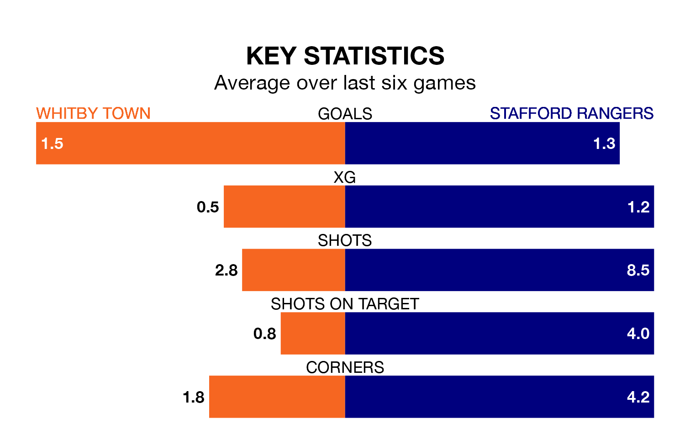

Whitby Town are heavy favourites to keep all three points at home in Tuesday's late kick-off against Stafford Rangers.
Whitby, who sit 10th in Northern Premier League with 18 games played, are priced at 1.4 to seal victory at Turnbull Ground.
Sitting 12 places and 20 points behind them in the table, Stafford are 5.2 to win with *Betting Company*, while the draw is at 4.5.
Whitby are in reasonable form in Northern Premier League, with three wins and two draws from their last six games.
With a win and five losses over that period, Stafford's form is much worse – they have taken three points from 18, compared to Town's 11.
In the last 10 years, Whitby and Stafford have played each other on 14 occasions. Whitby won three of them, Stafford five, and they drew six times.
On average, Whitby scored 1.1 goals and Stafford 1.3 in those matches.
Their last meeting was on April 8, when Stafford won 1-0 at home.
With 19 goals in 20 games so far this season, Rangers are the league's lowest scorers with 0.9 goals per game. And they are conceding more than average, letting in 49 goals at a rate of 2.5 per game.
The home side, meanwhile, are above average scorers, with 1.9 goals per game, compared to a league average of 1.7. They have conceded 1.5 goals per game.
Whitby's last match was on Saturday, a 3-2 win against Atherton Collieries.
Stafford lost 4-2 against Lancaster City last time out, also on Saturday.
